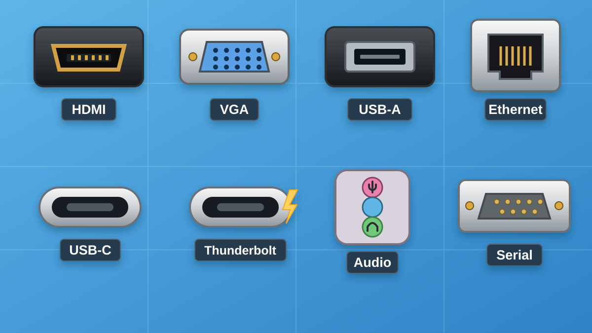

¿Qué entendemos por hardware?
El hardware es el conjunto de componentes físicos que forman un sistema informático: las piezas que podemos tocar, como la placa base, el procesador, la memoria RAM, el disco SSD, la tarjeta gráfica o la fuente de alimentación.
El hardware trabaja conjuntamente con el software, que está formado por los programas y datos que utiliza el ordenador. Un ordenador necesita ambos para funcionar.
Un equipo puede tener componentes muy potentes de manera individual y, sin embargo, ofrecer un rendimiento mediocre si están mal elegidos, son incompatibles entre sí o uno de ellos limita considerablemente al resto. Por eso, cuando se analiza un ordenador no basta con estudiar cada componente de forma aislada: también debemos comprender cómo se relacionan entre ellos.

Placa base
¿Qué es?
La placa base, también denominada motherboard, es la placa electrónica principal del ordenador.
Sobre ella se conectan o instalan prácticamente todos los componentes:
Podemos considerarla el punto de conexión y comunicación de todo el ordenador.
Función principal
Su función es permitir que los diferentes componentes del ordenador puedan:
- conectarse físicamente;
- recibir alimentación;
- intercambiar información;
- comunicarse con el procesador.
La placa base no suele determinar directamente que un ordenador sea más rápido, pero sí determina qué componentes podemos instalar y qué posibilidades de ampliación tendrá el equipo.
Características clave
| Característica | Qué indica |
|---|---|
| Socket | Tipo de procesadores que pueden instalarse |
| Chipset | Funciones y tecnologías soportadas por la placa |
| Formato | Tamaño físico de la placa |
| Tipo de RAM | Generación de memoria compatible |
| Ranuras RAM | Cantidad de módulos que pueden instalarse |
| PCI Express | Conexión para tarjetas gráficas y otras tarjetas |
| M.2 | Conexión habitual para SSD NVMe |
| SATA | Conexión para discos SATA |
| Puertos externos | USB, audio, Ethernet, vídeo, etc. |
| Conectividad | Ethernet, Wi‑Fi o Bluetooth según modelo |
Socket del procesador
El socket es el lugar de la placa base donde se instala el procesador.
No todos los procesadores pueden instalarse en cualquier placa. Un procesador diseñado para un determinado socket necesita una placa base que disponga exactamente de ese socket.
Incluso teniendo el mismo socket, también debe comprobarse que el chipset y la BIOS/UEFI de la placa sean compatibles con la generación concreta del procesador.
Chipset
El chipset es uno de los elementos que determina las capacidades de una placa base.
Puede determinar aspectos como: cantidad de conexiones disponibles, número de puertos USB, posibilidades de expansión, compatibilidad con determinadas tecnologías, características de almacenamiento o posibilidades de configuración del procesador y de la memoria.
Por tanto, dos placas con el mismo socket pueden ofrecer prestaciones diferentes.
Formato de la placa base
| Formato | Características |
|---|---|
| ATX | Grande, muchas posibilidades de expansión |
| Micro‑ATX | Más compacto, muy habitual |
| Mini‑ITX | Muy pequeño, utilizado en equipos compactos |
El formato es importante porque la caja del ordenador debe ser compatible con el tamaño de la placa base.
Antes de elegir este componente
1. ¿Qué debes saber?
Interconecta los componentes y determina las posibilidades de ampliación del equipo.
2. ¿Qué debes mirar al comprarlo?
Socket, chipset, formato (ATX, Micro-ATX, Mini-ITX), tipo de DDR, ranuras RAM, PCIe, M.2, SATA y puertos.
3. ¿Con qué debe ser compatible?
CPU (socket, chipset y BIOS/UEFI), RAM (DDR), caja (formato), SSD y tarjetas de expansión.
Procesador o CPU
¿Qué es?
La CPU, Central Processing Unit, es el procesador principal del ordenador.
Es el componente encargado de interpretar y ejecutar las instrucciones de los programas.
Cuando abrimos una aplicación, realizamos un cálculo, ejecutamos un videojuego o navegamos por Internet, el procesador interviene continuamente.
Podemos considerarlo uno de los principales responsables de la capacidad de cálculo general del equipo.

Fabricantes principales
| Fabricante | Familia conocida |
|---|---|
| Intel | Intel Core |
| AMD | AMD Ryzen |
Dentro de cada familia existen numerosas generaciones y gamas.
No debemos determinar cuál es mejor simplemente porque sea Intel o AMD. Hay que comparar modelos concretos de una generación determinada y para una determinada utilización.
Características importantes de un procesador
Núcleos
Un núcleo puede considerarse una unidad capaz de ejecutar instrucciones.
Los procesadores modernos contienen varios núcleos. Por ejemplo: 4 núcleos, 6 núcleos, 8 núcleos, 12 núcleos, etc.
Disponer de más núcleos permite realizar mejor aquellas tareas que pueden dividirse en varios procesos simultáneos.
Es especialmente importante en trabajos como: edición de vídeo, renderizado 3D, máquinas virtuales, compilación de programas o multitarea intensiva.
Frecuencia
La frecuencia suele expresarse en GHz — gigahercios.
Podemos encontrar valores como: 3,5 GHz · 4,2 GHz · 5 GHz.
La frecuencia indica aproximadamente el ritmo al que trabaja el procesador.
¿Qué significa que un procesador tenga 3,5 GHz?
1 hercio (Hz) = 1 ciclo de reloj por segundo.
1 GHz = mil millones de ciclos de reloj por segundo.
Un procesador funcionando a 3,5 GHz realiza aproximadamente 3.500 millones de ciclos de reloj cada segundo por núcleo.
Importante: un ciclo de reloj no equivale necesariamente a una operación. El número real de instrucciones u operaciones depende también de la arquitectura del procesador.
La arquitectura, la generación, el número de núcleos, la memoria caché y otras características también influyen enormemente.
Un procesador moderno a menor frecuencia puede superar a otro procesador más antiguo que tenga más GHz.
Consumo y temperatura
Los procesadores consumen electricidad y generan calor.
Un procesador de mayor consumo normalmente necesita un sistema de refrigeración más potente y una fuente de alimentación adecuada.
Las especificaciones pueden mostrar valores como TDP o diferentes límites de potencia, dependiendo del fabricante.
Gráficos integrados
Algunos procesadores incluyen una pequeña unidad gráfica denominada GPU integrada o iGPU.
Permite utilizar el ordenador sin necesidad de instalar una tarjeta gráfica independiente.
Puede ser suficiente para: ofimática, navegación, reproducción multimedia, tareas educativas y determinados juegos poco exigentes.
Otros procesadores carecen de gráficos integrados. En estos casos será necesaria una tarjeta gráfica dedicada para disponer de salida de imagen.
Antes de elegir este componente
1. ¿Qué debes saber?
Ejecuta las instrucciones de los programas. Su rendimiento no depende solo de los GHz.
2. ¿Qué debes mirar al comprarlo?
Modelo y generación, núcleos, frecuencia, consumo y presencia de gráficos integrados.
3. ¿Con qué debe ser compatible?
Placa base (socket, chipset y BIOS/UEFI), RAM admitida, refrigeración y fuente de alimentación.
Memoria RAM

¿Qué es?
La RAM — Random Access Memory — es la memoria de trabajo del ordenador.
En ella se almacenan temporalmente los programas y datos que el procesador está utilizando en ese momento.
Por ejemplo, cuando abrimos el navegador, un documento, un videojuego y una aplicación de edición, parte de la información necesaria se coloca en RAM.
Característica fundamental: es memoria volátil
La información almacenada en RAM desaparece cuando apagamos el ordenador.
Por esta razón, RAM y almacenamiento no deben confundirse.
Características principales de la RAM
Capacidad
Se mide normalmente en GB — gigabytes.
Podemos encontrar ordenadores con: 8 GB, 16 GB, 32 GB, 64 GB...
La cantidad necesaria depende de las tareas realizadas.
Tener poca RAM provoca que el sistema tenga que recurrir con mayor frecuencia al almacenamiento como memoria auxiliar, que es mucho más lento.
Generación DDR
La RAM utilizada actualmente pertenece a diferentes generaciones de memoria DDR.
Por ejemplo: DDR4 y DDR5.
Las generaciones no son intercambiables físicamente.
Una placa preparada para DDR4 no permite instalar módulos DDR5 y viceversa.
Velocidad
La velocidad de las memorias modernas suele especificarse utilizando MT/s — millones de transferencias por segundo.
Por ejemplo: DDR4-3200 · DDR5-5600.
Es habitual que tiendas y fabricantes utilicen incorrectamente MHz para presentar este dato.
Una mayor velocidad puede aumentar el ancho de banda disponible para el procesador, aunque la mejora real depende del resto del sistema.
Formato
En ordenadores de sobremesa se utilizan principalmente módulos DIMM.
En muchos portátiles se emplean módulos más pequeños denominados SO-DIMM.
Antes de elegir este componente
1. ¿Qué debes saber?
Es memoria temporal y volátil; al apagar el ordenador pierde su contenido.
2. ¿Qué debes mirar al comprarlo?
Capacidad (GB), generación DDR, velocidad (MT/s), formato (DIMM o SO-DIMM) y número de módulos.
3. ¿Con qué debe ser compatible?
Placa base y CPU: generación DDR, formato, capacidad y velocidades soportadas.
Almacenamiento
El almacenamiento es el componente donde se guardan permanentemente:
el sistema operativo, programas, documentos, fotografías, vídeos, videojuegos y demás archivos.
A diferencia de la RAM, la información permanece almacenada incluso cuando apagamos el ordenador.
Existen dos tecnologías principales.
HDD
Almacenamiento magnético con partes mecánicas.
SSD
Almacenamiento mediante memoria electrónica, sin discos giratorios.
Disco duro HDD
¿Qué es?
Un HDD — Hard Disk Drive — almacena información magnéticamente utilizando discos que giran en su interior.
Incluye partes mecánicas.

Ventajas
Su principal ventaja es proporcionar gran capacidad a un precio relativamente reducido.
Por este motivo continúa siendo útil para almacenar grandes cantidades de información.
Inconvenientes
Es considerablemente más lento que un SSD.
Además: produce ruido, genera vibraciones, consume más energía y es más sensible a golpes porque contiene piezas móviles.
Características principales
| Característica | Qué observar / ejemplo |
|---|---|
| Capacidad | 1 TB, 2 TB, 4 TB |
| Velocidad de giro | 5400 o 7200 RPM |
| Interfaz | SATA |
| Formato | Habitualmente 3,5" en sobremesa |
| Velocidad de lectura | Rapidez con la que recupera datos. Se expresa normalmente en MB/s. |
| Velocidad de escritura | Rapidez con la que guarda datos. Se expresa normalmente en MB/s. |
Como referencia orientativa, un HDD puede situarse aproximadamente en el entorno de 100–220 MB/s en transferencias secuenciales, dependiendo del modelo.
Antes de elegir este componente
1. ¿Qué debes saber?
Almacena datos aunque se apague el ordenador; tiene piezas mecánicas y suele ser más lento que un SSD.
2. ¿Qué debes mirar al comprarlo?
Capacidad (TB), velocidad de giro (RPM), lectura/escritura (MB/s), formato y conexión SATA.
3. ¿Con qué debe ser compatible?
Placa base (puerto SATA), fuente (alimentación SATA) y caja (espacio y soporte para la unidad).
Unidad SSD

¿Qué es?
Un SSD — Solid State Drive — almacena la información utilizando memoria electrónica.
No contiene discos giratorios ni piezas mecánicas.
Ventajas
Un SSD proporciona: arranque del ordenador mucho más rápido, apertura más rápida de programas, menor tiempo de carga y mayor velocidad de transferencia de archivos.
Por eso, disponer de SSD supone una de las diferencias más perceptibles en el uso diario de un ordenador.
SSD SATA
Utiliza normalmente la interfaz SATA.
Puede presentarse en formato de 2,5 pulgadas.
Su velocidad está limitada por la propia interfaz SATA y suele situarse aproximadamente en el entorno de varios cientos de MB/s.
SSD M.2 NVMe
Muchos ordenadores actuales utilizan unidades que físicamente tienen forma de pequeña tarjeta.
El formato habitual es M.2.
Muchas de estas unidades utilizan el protocolo NVMe y se comunican mediante líneas PCI Express.
Pueden alcanzar velocidades de varios GB/s, muy superiores a las de un SSD SATA.
No todos los dispositivos M.2 son necesariamente NVMe.
Características clave de un SSD
| Característica | Qué debemos observar |
|---|---|
| Capacidad | GB o TB disponibles |
| Formato | 2,5", M.2, etc. |
| Interfaz | SATA o PCIe |
| Protocolo | Por ejemplo NVMe |
| Velocidad de lectura | Rapidez al recuperar información. Se expresa en MB/s o, en unidades muy rápidas, en GB/s. |
| Velocidad de escritura | Rapidez al guardar información. Se expresa en MB/s o GB/s. |
| Generación PCIe | Determina el ancho de banda disponible |
Comparativa de velocidades de lectura y escritura
| Tipo | Lectura secuencial orientativa | Escritura secuencial orientativa |
|---|---|---|
| HDD | ≈ 100–220 MB/s | ≈ 100–220 MB/s |
| SSD SATA | Hasta ≈ 550–560 MB/s | Hasta ≈ 510–520 MB/s |
| SSD NVMe PCIe 3.0 | Hasta ≈ 3.500 MB/s | Hasta ≈ 3.000 MB/s |
Los valores son orientativos. La velocidad real depende del modelo, interfaz, generación y condiciones de funcionamiento.
Antes de elegir este componente
1. ¿Qué debes saber?
Almacena permanentemente programas y archivos; normalmente es mucho más rápido que un HDD.
2. ¿Qué debes mirar al comprarlo?
Capacidad, lectura y escritura (MB/s), formato (2,5 pulgadas o M.2), interfaz y protocolo (SATA, PCIe/NVMe).
3. ¿Con qué debe ser compatible?
Placa base (puerto o ranura y protocolo compatibles), y, para un SSD SATA de 2,5 pulgadas, cableado y alimentación.
Tarjeta gráfica o GPU
¿Qué es?
La GPU — Graphics Processing Unit — es un procesador especializado en realizar gran cantidad de operaciones en paralelo.
Su utilización más conocida es la generación de gráficos.
Es especialmente importante en: videojuegos, diseño 3D, edición audiovisual, renderizado, determinadas aplicaciones científicas y numerosos procesos relacionados con inteligencia artificial.

GPU integrada y GPU dedicada
Una GPU integrada forma parte del procesador o del propio sistema y normalmente utiliza parte de la memoria RAM.
Una tarjeta gráfica dedicada dispone de su propio procesador gráfico y normalmente de su propia memoria de vídeo.
Para tareas básicas no siempre es necesaria una tarjeta gráfica dedicada.
Para videojuegos exigentes, modelado 3D o determinados trabajos profesionales sí puede convertirse en uno de los componentes más importantes del equipo.
Fabricantes
En el mercado podemos encontrar principalmente soluciones gráficas relacionadas con:
Como ocurre con los procesadores, no debe juzgarse el rendimiento únicamente por la marca.
Antes de elegir este componente
1. ¿Qué debes saber?
Procesa gráficos y tareas paralelas; puede estar integrada o ser una tarjeta dedicada.
2. ¿Qué debes mirar al comprarlo?
Modelo, rendimiento para la tarea prevista, memoria gráfica (VRAM), consumo, dimensiones y salidas de vídeo.
3. ¿Con qué debe ser compatible?
Placa base (ranura PCIe), caja (espacio), fuente (potencia y conectores) y monitor (tipo de conexión).
Fuente de alimentación

¿Qué es?
La fuente de alimentación o PSU — Power Supply Unit — proporciona energía eléctrica a todos los componentes del ordenador.
Convierte la corriente eléctrica procedente de la red en las tensiones que necesitan los componentes internos.
Antes de elegir este componente
1. ¿Qué debes saber?
Convierte y suministra energía eléctrica a los componentes del ordenador.
2. ¿Qué debes mirar al comprarlo?
Potencia nominal en W, eficiencia, formato, calidad y cantidad/tipo de conectores de alimentación.
3. ¿Con qué debe ser compatible?
CPU y GPU (consumo y conectores), placa base (conectores) y caja (formato y espacio).
Tarjeta de red
Permite que el ordenador se comunique con otros dispositivos y acceda a una red.
Actualmente suele estar integrada directamente en la placa base.

Ethernet
Permite realizar una conexión de red mediante cable.
Se utiliza normalmente un conector RJ45.
La conexión por cable suele proporcionar: gran estabilidad, baja latencia y velocidades elevadas.
Wi‑Fi
Permite conectarse a redes inalámbricas.
Algunas placas base incorporan Wi‑Fi y otras necesitan un adaptador adicional.
Las diferentes generaciones del estándar Wi‑Fi ofrecen diferentes prestaciones.
Bluetooth
Muchas placas que incorporan Wi‑Fi también proporcionan Bluetooth.
Se utiliza para conectar periféricos como: auriculares, ratones, teclados, mandos y teléfonos.
Antes de elegir este componente
1. ¿Qué debes saber?
Permite conectar el ordenador a otros dispositivos mediante Ethernet, Wi-Fi o Bluetooth.
2. ¿Qué debes mirar al comprarlo?
Velocidad Ethernet, compatibilidad Wi-Fi/Bluetooth y si el adaptador está integrado o es adicional.
3. ¿Con qué debe ser compatible?
Placa base (si se instala tarjeta o adaptador), router/punto de acceso y tipo de conexión disponible.
Principales conectores externos
Los conectores externos permiten comunicar el ordenador con otros dispositivos. En 4.º ESO es importante reconocer los conectores más habituales, saber para qué sirven y elegir el adecuado en cada situación.

Los conectores que debes reconocer
| Conector | ¿Para qué sirve? | Importancia |
|---|---|---|
| USB-A | Teclado, ratón, pendrive, impresora y otros periféricos. | Imprescindible |
| USB-C | Datos, carga y, en algunos equipos, también vídeo. | Imprescindible |
| HDMI | Conectar el ordenador a monitores, televisores y proyectores. Transporta vídeo y audio digital. | Imprescindible |
| DisplayPort | Conectar monitores. Transporta vídeo y audio digital y es habitual en ordenadores de sobremesa. | Importante |
| Ethernet (RJ45) | Conectar el ordenador a una red mediante cable. | Imprescindible |
| Jack de audio 3,5 mm | Conectar auriculares, altavoces o micrófonos. | Imprescindible |
USB-A y USB-C
USB es uno de los sistemas de conexión más utilizados.
Puede usarse para conectar teclados, ratones, memorias USB, discos externos, impresoras, teléfonos y muchos otros dispositivos.
USB-A y USB-C indican principalmente la forma física del conector.
HDMI y DisplayPort
Ambos permiten transmitir vídeo y audio digital.
HDMI es muy habitual en televisores, proyectores, monitores y ordenadores.
DisplayPort aparece con frecuencia en ordenadores de sobremesa, monitores y tarjetas gráficas.
Ethernet (RJ45)
Permite conectar el ordenador a una red mediante cable.
El conector se conoce habitualmente como RJ45 y suele proporcionar una conexión estable y rápida.
Audio
El jack de 3,5 mm se utiliza para conectar dispositivos de audio analógico.
Puede emplearse para auriculares, altavoces o micrófonos, aunque algunos equipos modernos también utilizan USB o Bluetooth para el sonido.
Otros conectores que puedes encontrar
VGA
Es un conector antiguo de vídeo analógico. Todavía puede aparecer en algunos ordenadores, monitores o proyectores antiguos.
Puerto serie
Fue habitual en ordenadores antiguos y en determinados equipos técnicos. Hoy no es un conector básico de uso cotidiano.
USB-C y Thunderbolt: no son lo mismo
Este punto puede resultar confuso porque muchos dispositivos con Thunderbolt utilizan físicamente un conector USB-C.
Describe la forma física del conector.
Es una tecnología de comunicación que puede utilizar ese conector.
Por tanto, dos puertos con la misma forma USB-C no tienen por qué ofrecer exactamente las mismas funciones o velocidades.
Para este nivel basta con saber reconocer USB-C. Thunderbolt puede considerarse un contenido de ampliación.
Reconocer visualmente USB-A, USB-C, HDMI, DisplayPort, Ethernet y audio, y elegir el conector adecuado ante una situación cotidiana.
Antes de elegir este componente
1. ¿Qué debes saber?
Los puertos permiten conectar periféricos, pantallas y redes. La forma de un conector no siempre indica su velocidad.
2. ¿Qué debes mirar al comprarlo?
USB-A/USB-C, HDMI, DisplayPort, Ethernet y audio: cantidad, funciones y velocidades cuando proceda.
3. ¿Con qué debe ser compatible?
Periféricos, monitor y red: revisar que los conectores y las funciones de ambos extremos coincidan.
¿Cómo trabajan todos los componentes conjuntamente?
Cuando encendemos el ordenador se produce, simplificando mucho, el siguiente proceso:
Resolución de problemas: piensa como un técnico
Para resolver una incidencia no basta con decir qué pieza podría estar fallando. Hay que identificar síntomas, formular hipótesis, comprobarlas en orden y justificar una solución.
Seguridad: no abras fuentes de alimentación ni manipules componentes internos con el equipo conectado. En el aula, cualquier intervención interna debe contar con supervisión del docente.
Caso 1. El ordenador enciende, pero el monitor no muestra imagen
Situación: Los ventiladores giran y el equipo parece encendido, pero la pantalla permanece negra.
Antes de abrir la respuesta: escribe tu hipótesis y dos comprobaciones que realizarías.
Mostrar propuesta de diagnóstico y solución
- Comprobar que el monitor esté encendido y conectado a la entrada adecuada.
- Revisar el cable HDMI/DisplayPort y probar otro cable o puerto, si es posible.
- Si hay GPU dedicada, comprobar si el monitor debe conectarse a esa tarjeta en vez de a la placa base.
- Si persiste, registrar el síntoma y solicitar ayuda antes de manipular componentes internos.
Conclusión: No significa automáticamente que el monitor esté averiado: también pueden intervenir cable, conexión o componentes del equipo.
Caso 2. La memoria RAM nueva no encaja
Situación: Un alumno compra un módulo DDR5 para un ordenador cuya placa utiliza DDR4.
Antes de abrir la respuesta: escribe tu hipótesis y dos comprobaciones que realizarías.
Mostrar propuesta de diagnóstico y solución
- Identificar la generación DDR admitida por la placa base.
- Comprobar en la ficha del módulo que su generación y formato coincidan.
- Elegir un módulo compatible; no forzar nunca su inserción.
Conclusión: DDR4 y DDR5 no son intercambiables: sus módulos y ranuras no son compatibles.
Caso 3. Un SSD M.2 no es reconocido
Situación: Se instala un SSD M.2, pero el ordenador no lo detecta.
Antes de abrir la respuesta: escribe tu hipótesis y dos comprobaciones que realizarías.
Mostrar propuesta de diagnóstico y solución
- Comprobar el modelo de placa y las especificaciones de la ranura M.2.
- Verificar si el SSD usa SATA o NVMe/PCIe y si la ranura admite ese tipo.
- Consultar el manual y revisar la configuración con supervisión docente.
- Si la unidad es compatible y sigue sin aparecer, realizar el diagnóstico con el profesor.
Conclusión: M.2 describe el formato; no garantiza por sí solo que la unidad y la ranura compartan la interfaz.
Caso 4. La fuente no sirve para la tarjeta gráfica elegida
Situación: Una tarjeta gráfica nueva exige más alimentación de la que ofrece el equipo.
Antes de abrir la respuesta: escribe tu hipótesis y dos comprobaciones que realizarías.
Mostrar propuesta de diagnóstico y solución
- Consultar consumo y recomendaciones de alimentación de la GPU.
- Identificar potencia y conectores disponibles en la fuente.
- Comprobar también el consumo del resto de componentes.
- Seleccionar una fuente adecuada y segura si la actual no cumple.
Conclusión: No basta con mirar los W: los conectores, la calidad de la fuente y su compatibilidad física también importan.
Caso 5. El ordenador se calienta demasiado
Situación: Durante una tarea exigente el equipo se ralentiza y sus ventiladores hacen mucho ruido.
Antes de abrir la respuesta: escribe tu hipótesis y dos comprobaciones que realizarías.
Mostrar propuesta de diagnóstico y solución
- Observar si las rejillas de ventilación están obstruidas.
- Comprobar la temperatura mediante una herramienta de supervisión.
- Revisar el flujo de aire y el funcionamiento de los ventiladores sin abrir equipos conectados.
- Informar al profesor y proponer limpieza o revisión técnica si procede.
Conclusión: Un problema térmico puede reducir el rendimiento; no debe resolverse manipulando el interior del equipo encendido.
Caso 6. Internet falla solo en un ordenador
Situación: Otros equipos del aula navegan, pero uno no tiene conexión.
Antes de abrir la respuesta: escribe tu hipótesis y dos comprobaciones que realizarías.
Mostrar propuesta de diagnóstico y solución
- Distinguir si se utiliza cable Ethernet o Wi-Fi.
- Revisar si el cable está conectado o si el equipo está asociado a la red correcta.
- Comprobar si el adaptador de red está activado.
- Si continúa el fallo, comunicar las pruebas realizadas y solicitar ayuda.
Conclusión: No siempre es un problema de Internet: puede ser del cable, adaptador o configuración local.